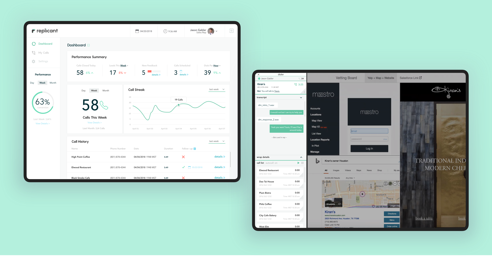
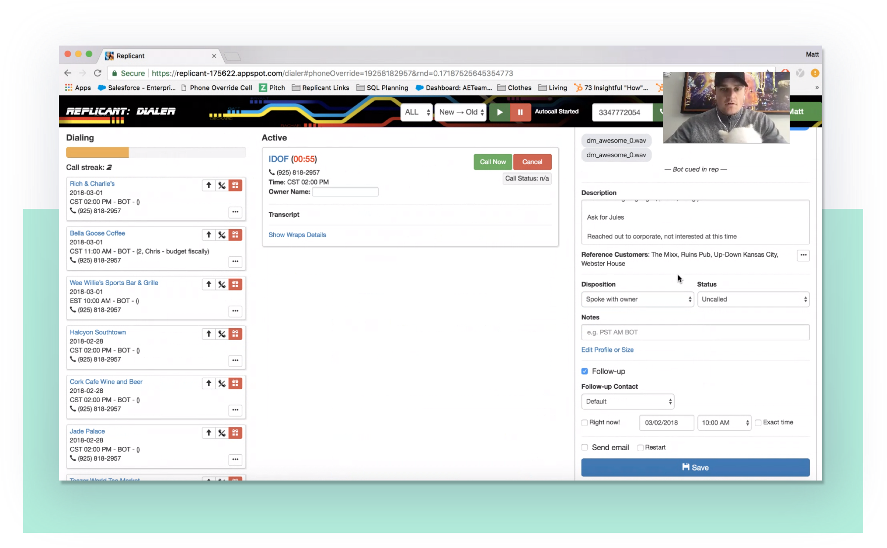
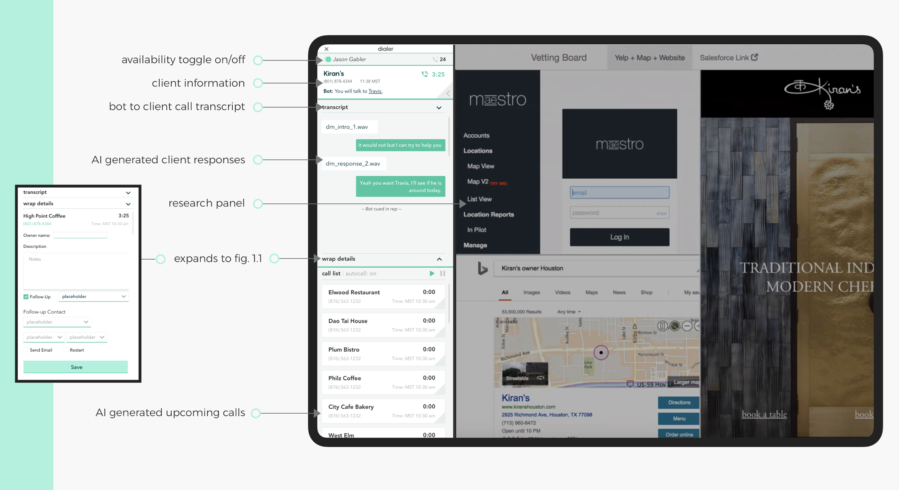
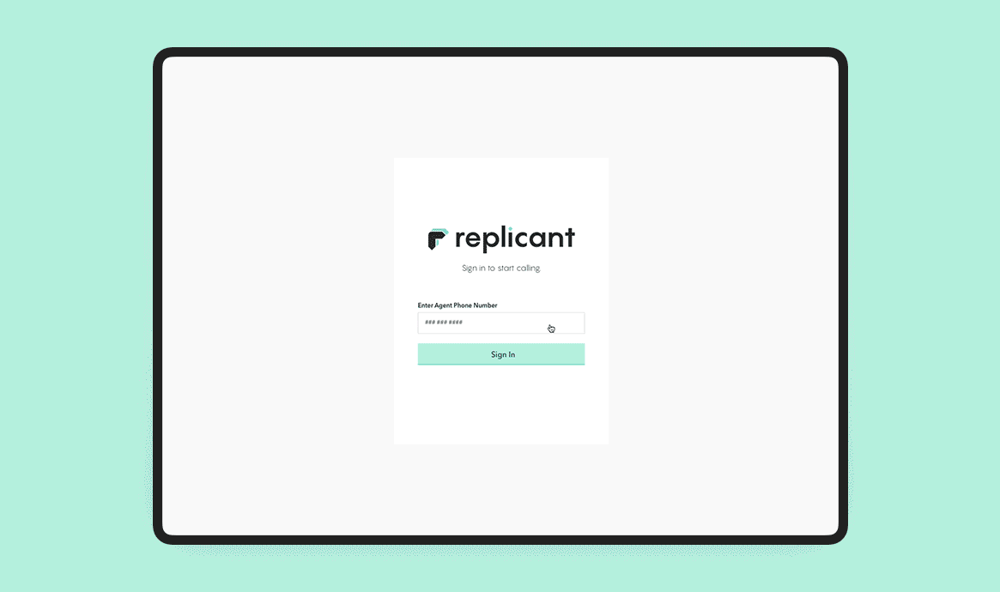
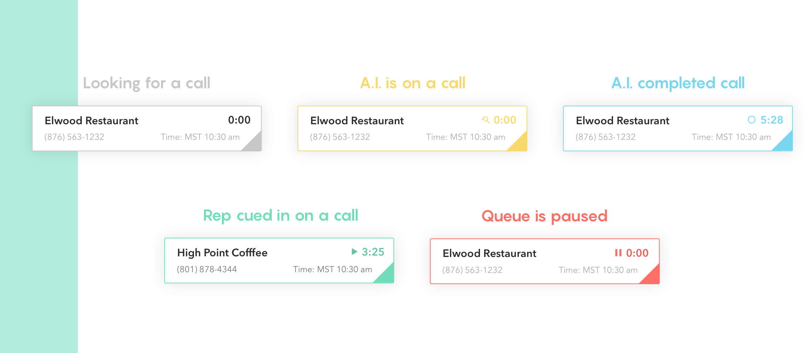
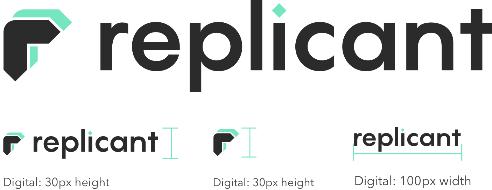

Output
Dialer is a vizualization of the Replicant AI. I lead and executed on the design of the product from MVP to launch.
Problem
Replicant users in call centers were unfocused, unable to comprehend, endured task duplicity and screen overload.
Users in this case were call center employees. I ran 8 1:1 user walkthrough sessions to understand the pain points.
 Findings — Unsure of the present AI’s state | Surprised when the AI would queue them in on a call | Frazzled to find information with all the open windows.Design Rationale
I aimed to occupy less space with the core UI. I cut the active windows from 2 to 1, a better fit for their 2 screen workstation.
Users can now use the core UI in tandem with a research window to gather information.
I created an optional dashboard UI which allows the employees to track their progress and access metrics.
Color was used to represent the AI’s state. Colorizing the experience based on the activity on a per client basis helped users distinguish what was happening at all times.
I leveraged an open source set of sounds to correspond with colors which would support color blind users.
To aid in implementation I created a front-end design library of functional stateful components in ReactJS.
Branding
I conducted from scratch branding, logo, and visual design for the Replicant company brand.
 View the full branding guide